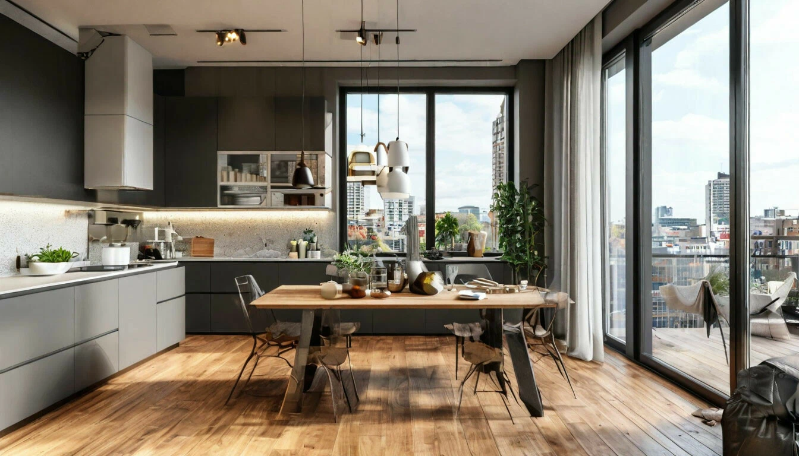
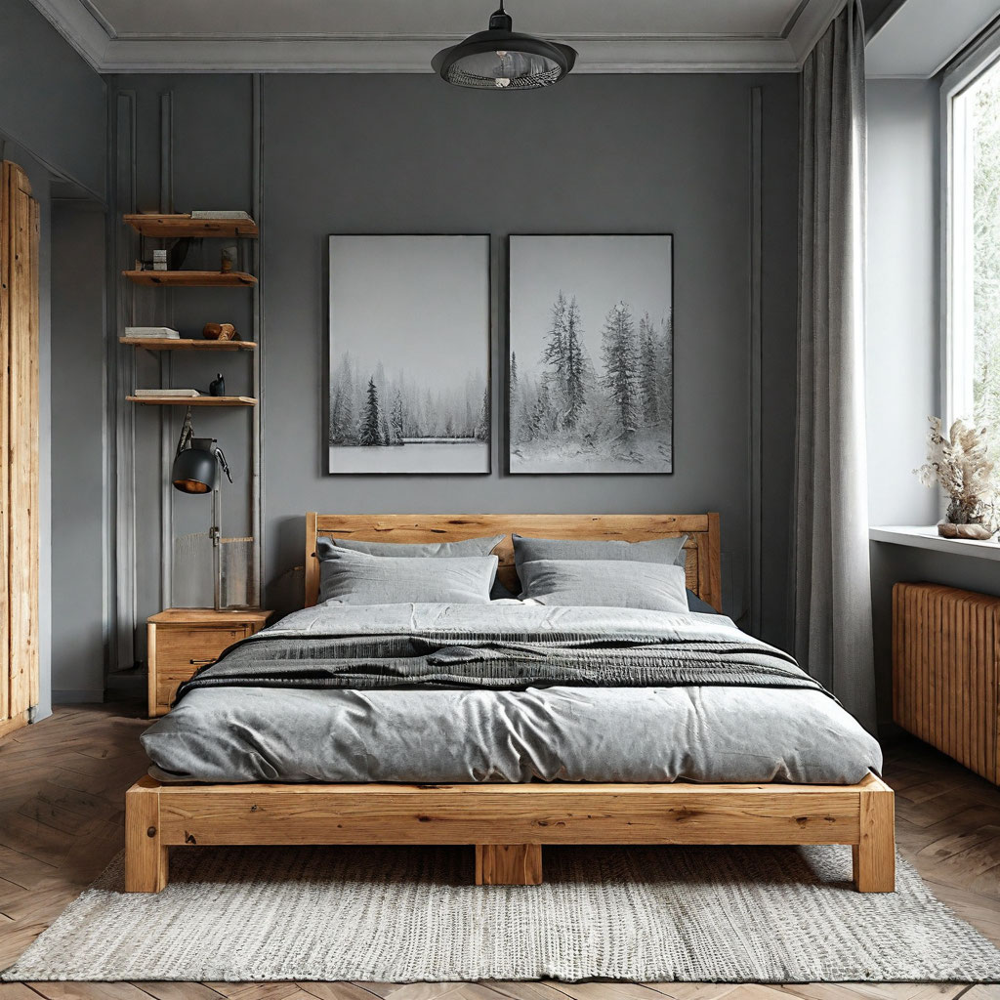
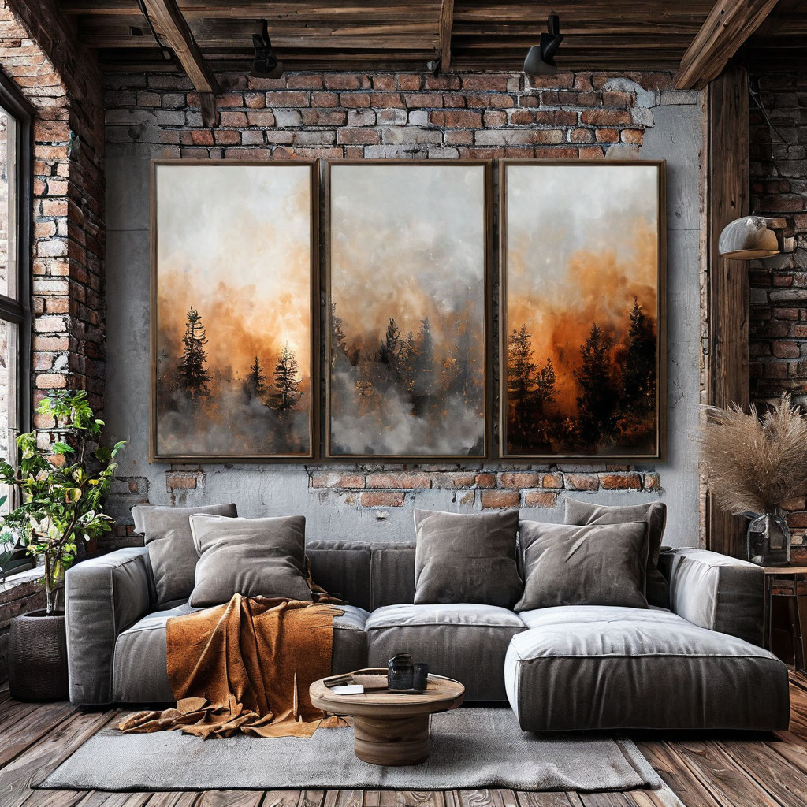
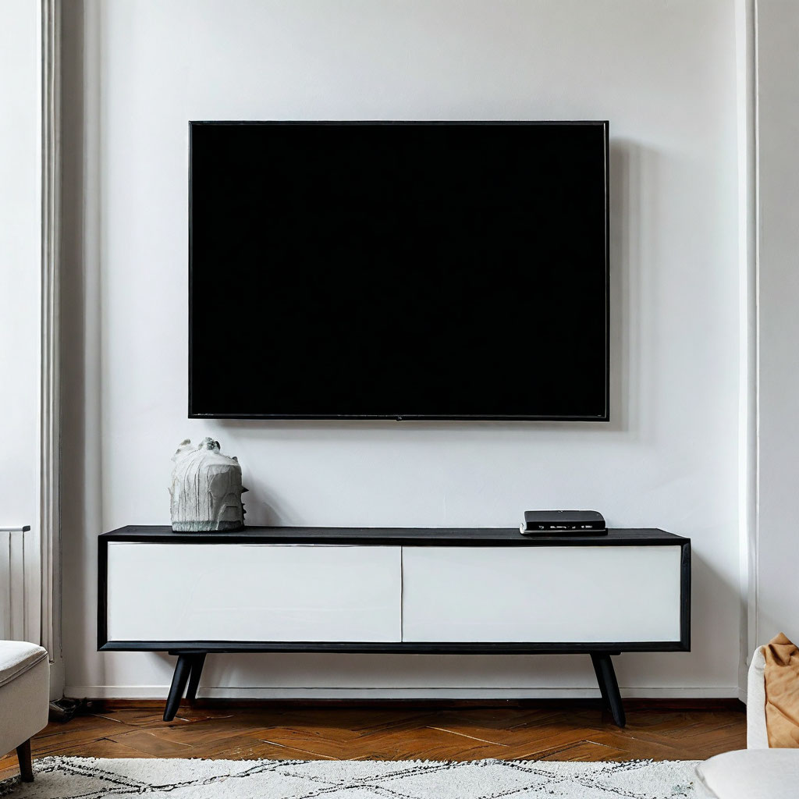
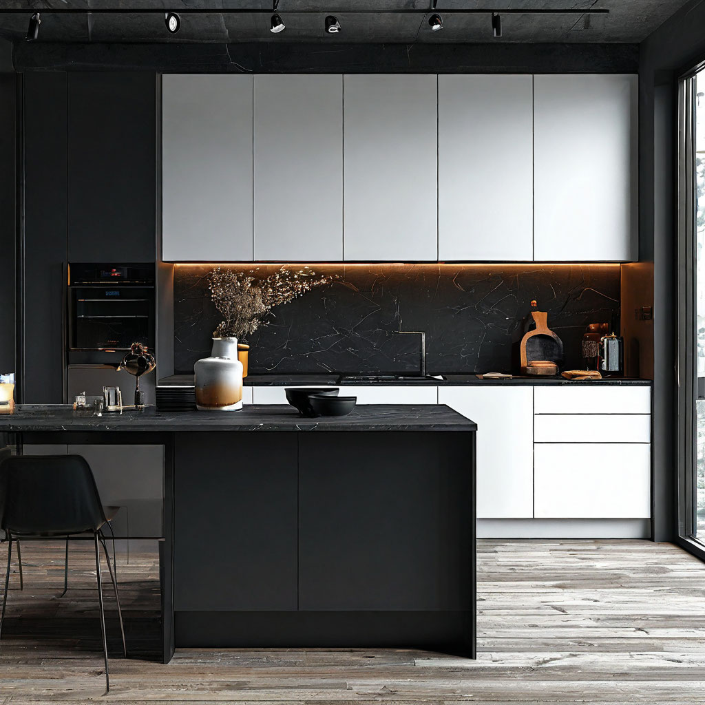
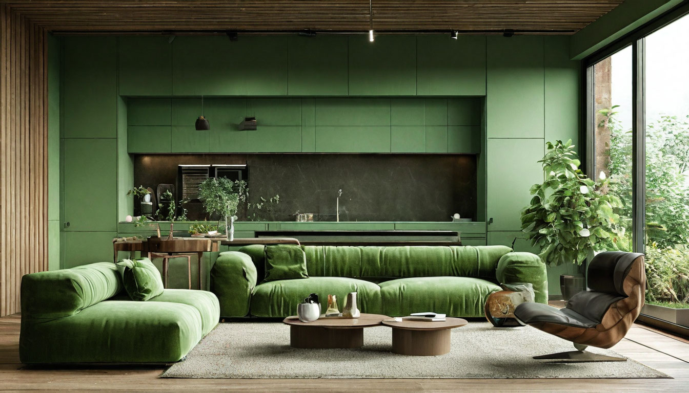
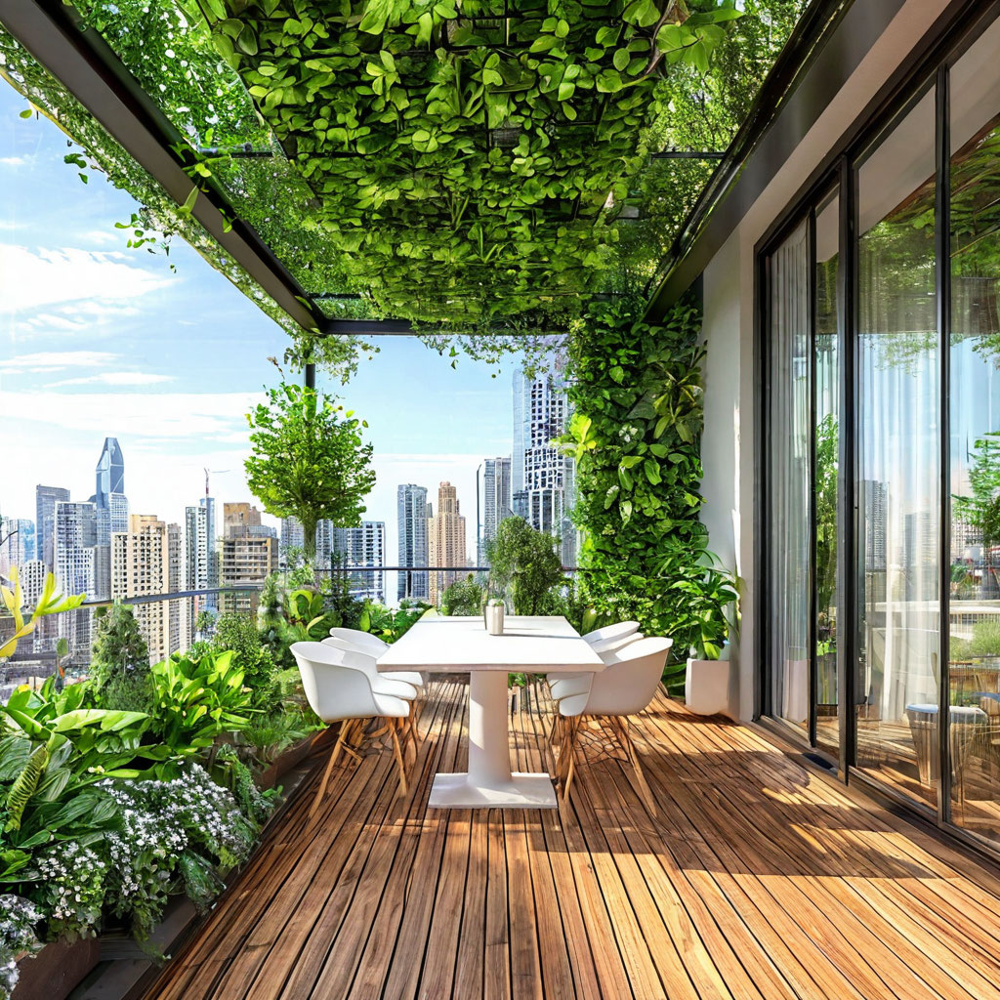

На этой странице представлены примеры моих работ. Приятного просмотра!
Скандинавский стиль
Характеризуется простотой, светом и функциональностью. Основные черты — светлые нейтральные оттенки, натуральные материалы (дерево, лен), минимализм в декоре и акцент на комфорт. Этот стиль создает ощущение тепла и уюта, идеально подходит для тех, кто ценит простоту и естественность.


Стиль лофт
Стиль лофт возник из переоборудованных промышленных зданий в жилые пространства. Он отличается открытыми планировками, высокими потолками, кирпичными стенами, бетонными поверхностями и металлическими элементами. Лофт сочетает грубую индустриальную эстетику с современным дизайном, создавая уникальное сочетание старого и нового.

Минимализм
Минимализм стремится к максимальной простоте и функциональности. В этом стиле преобладают чистые линии, монохромные цветовые схемы и отсутствие лишнего декора. Пространство организовано таким образом, чтобы каждая деталь имела свое назначение. Минимализм идеален для тех, кто предпочитает порядок и спокойствие.


Эко стиль
Эко-стиль ориентирован на использование натуральных материалов и экологических технологий. Основные элементы включают дерево, камень, растения, а также текстильные изделия из органических тканей. Эко-интерьеры создают гармонию с природой, способствуют улучшению микроклимата в помещении и поддерживают здоровый образ жизни.


Хай-тек
Хай-тек — это современный стиль, основанный на высоких технологиях и материалах. Характеризуется четкими линиями, гладкими поверхностями, использованием стекла, металла и пластика. Хай-тек подчеркивает функциональность и инновации, часто включает встроенную технику и умные системы управления домом.